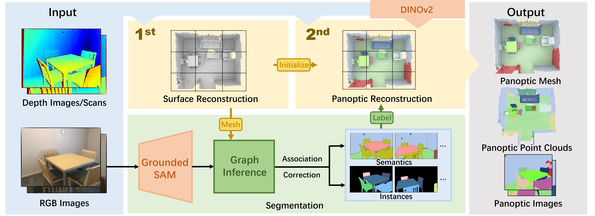
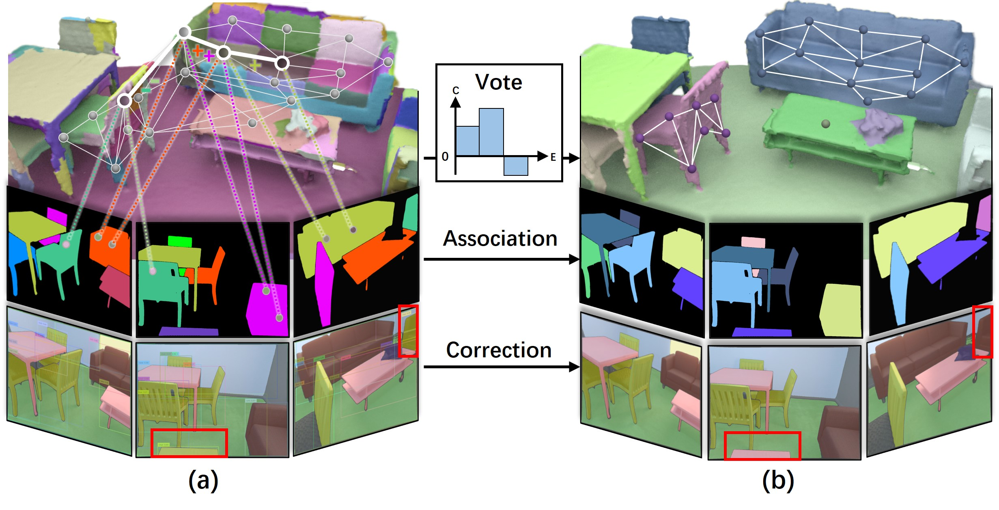

Approach Overview

PanopticRecon consists of a reconstruction task and a segmentation task. The first step of the reconstruction task realizes the implicit surface reconstruction through RGB-D observations to provide the scene geometry for the segmentation task. Secondly, the segmentation task builds a graph from the normal of mesh, and infers 3D pseudo IDs to associate the 2D instance IDs by instance mask of Grounded SAM. In addition, 3D instance ID corrects some of the erroneous semantic labels. Then, the second reconstruction step realizes 2D-3D labeling supervised by consistent semantic and instance labels, and finally obtains the panoptic mesh, point cloud, and novel view images of the scene.

Graph Inference
The points in the upper graph in \textbf{(a)} are the nodes (superpoints) of the graph. The color region corresponding to each node is the superface. We determine the nodes in an instance mask of a frame based on the overlap between the instance mask provided by Grounded SAM and the mask projected by the superface, and vote for the edges between the selected nodes. Similarly, we reduce the votes for the edges between nodes corresponding to masks of different instances in that frame. The edges with non-positive votes are finally cut and the nodes connected form an instance as shown in \textbf{(b)}. Once the 3D instance pseudo IDs are obtained, we associate 2D instance IDs while correcting incorrect semantic labels.
Network
Based on the reconstruction architecture of a multi-level hash representation grid and small MLP, multi-branch joint optimization achieves multiple tasks of SDF reconstruction, appearance reconstruction, feature distillation, semantic segmentation, and instance segmentation. The loss function of the optimization process is not only the basic loss of SDF and color, but we also set the DINO-v2 feature vector L2-loss to unify the mesh features of similar objects or backgrounds and learn small classifiers targeting the mesh features through the cross-entropy loss of semantics and instances, to achieve the unsupervised situation of some regions due to blank labels to a certain extent.BibTeX
@article{yu2024panopticrecon,
title={PanopticRecon: Leverage Open-vocabulary Instance Segmentation for Zero-shot Panoptic Reconstruction},
author={Yu, Xuan and Liu, Yili and Han, Chenrui and Mao, Sitong and Zhou, Shunbo and Xiong, Rong and Liao, Yiyi and Wang, Yue},
journal={arXiv preprint arXiv:2407.01349},
year={2024}
}